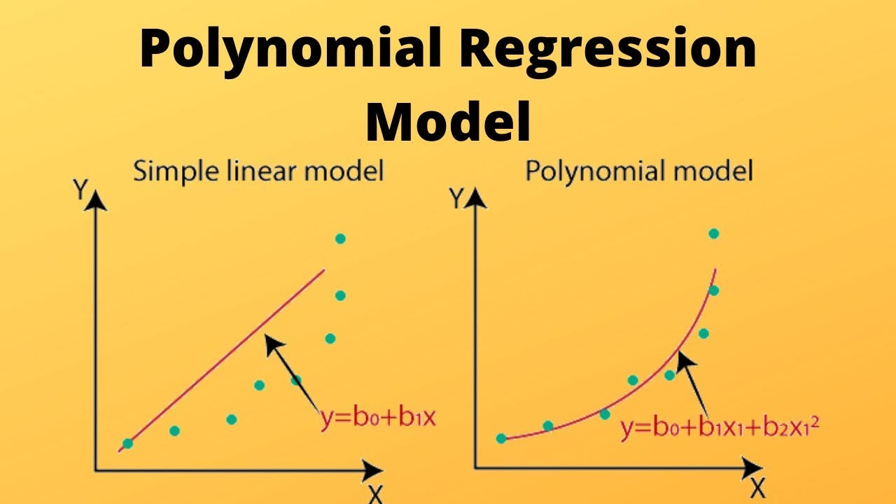
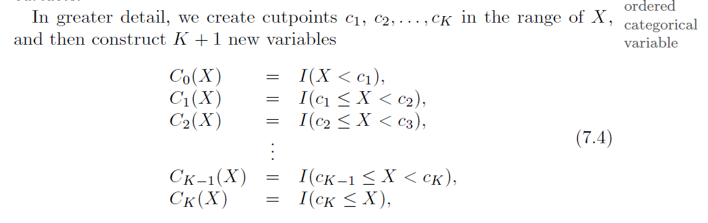
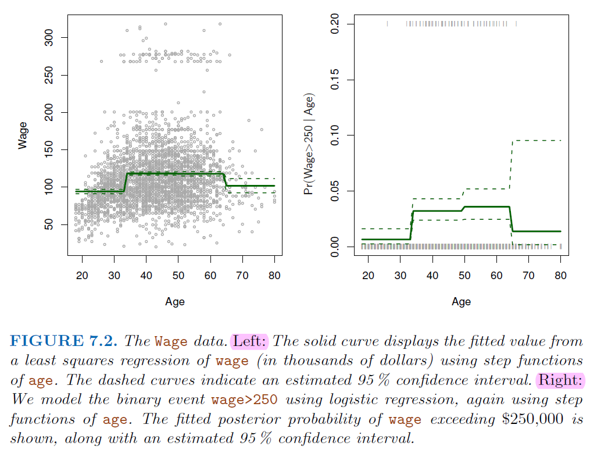
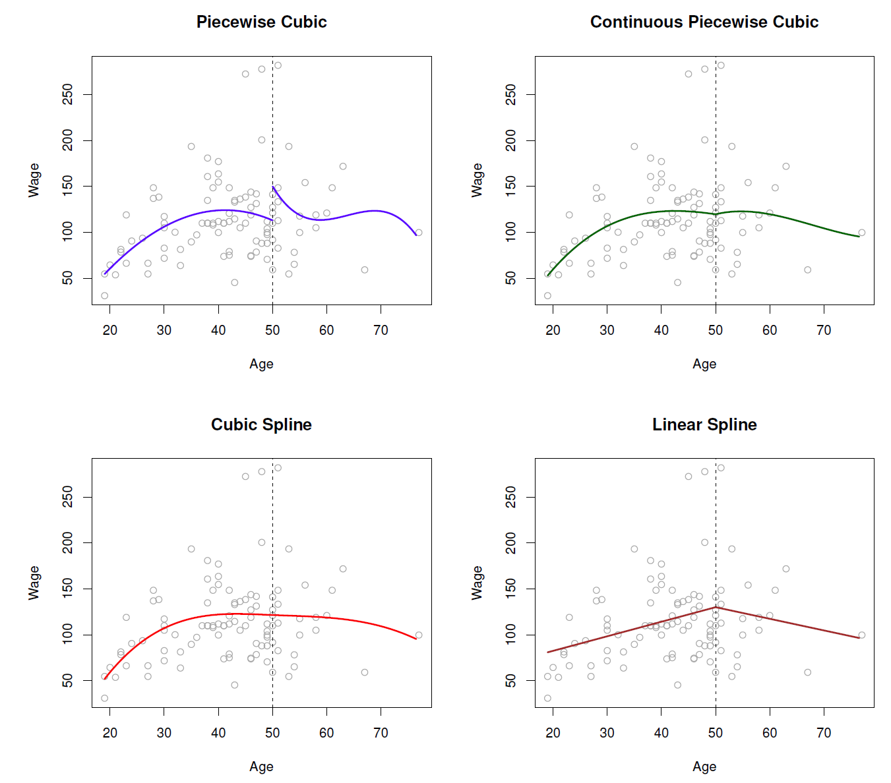
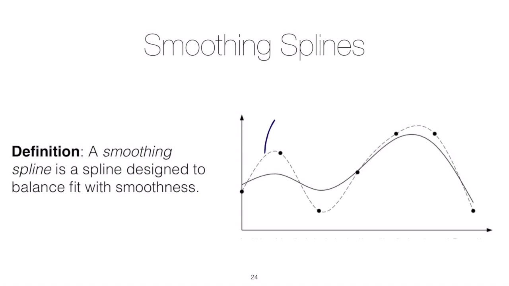
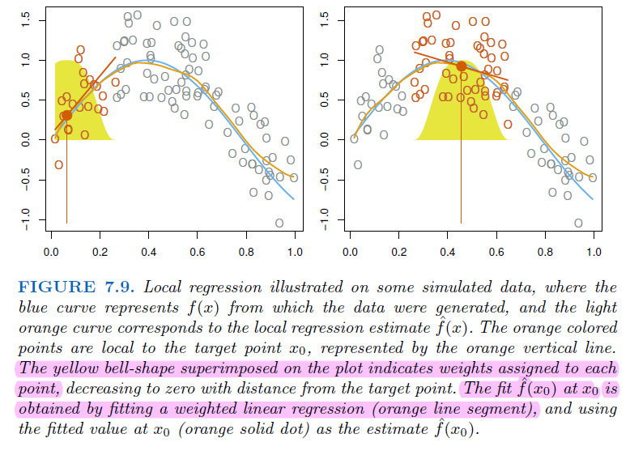
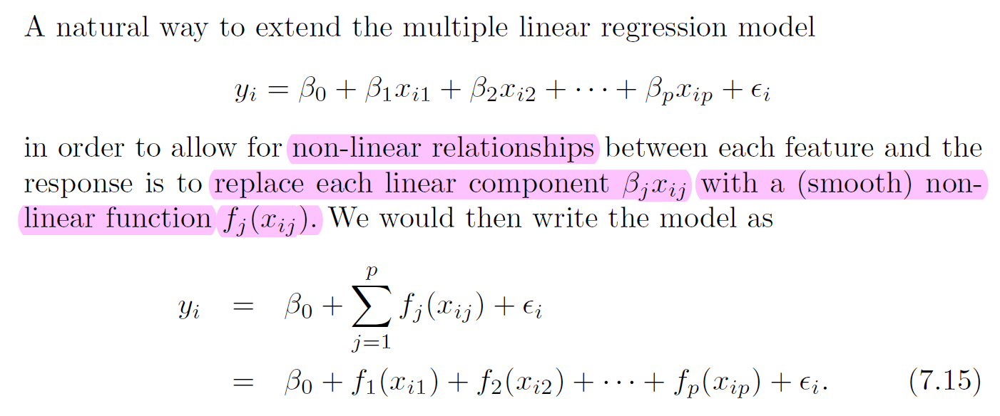
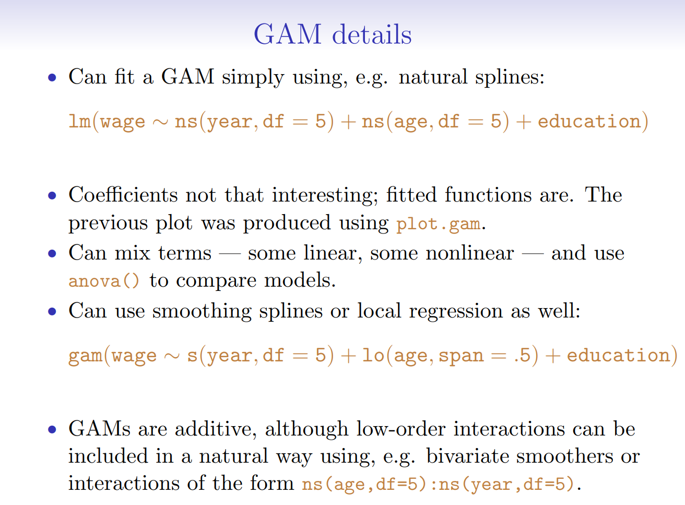
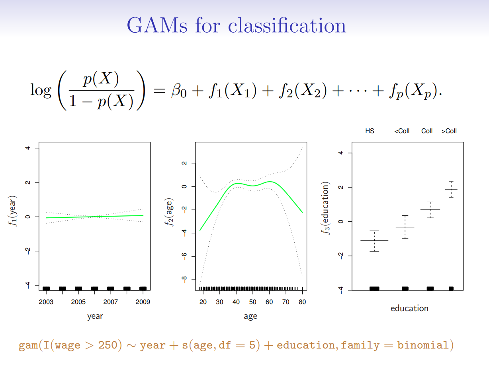

7. Non-linear Regression#
The truth is not always linear
7.1. Polynomial regression#

7.2. Step Function#
Using polynomial functions of the features as predictors in a linear model imposes a global structure on the non-linear function of X.
We can instead use
step functionsin order to avoid imposing such a global structure.This amounts to converting a
continuousvariable into anorderedcategoricalvariable.

Divide the target variable into discrete classes
Can use
Breakpointtest statistics to help this transforming.

7.3. Break Point Statistics#
Breakpoint checkingis a statistical technique used to identifystructural changesorbreakpointsin data series.These changes could indicate shifts in underlying processes, trends, or relationships within the data.
7.3.1. Chow Test#
The chow test statistic is calculated as follows:
\(RSS_r\) is the residual sum of squares from the model with all data combined.
\(RSS_1\) and \(RSS_2\) are the residual sum of squares from the separate models for each segment.
\(k\) is the number of parameters estimated in each segment.
\(n_1\) and \(n_2\) are the number of observations in each segment $\( F=\frac{RSS_r-(RSS_1+RSS_2)/k}{(RSS_1+RSS_2)/(n_1+n_2-2k)} \)$
import numpy as np
import statsmodels.api as sm
import matplotlib.pyplot as plt
# Generate two sections of data with different linear functions
np.random.seed(0)
# First section
n1 = 50
x1 = np.linspace(0, 5, n1)
y1 = 2 * x1 + np.random.normal(0, 1, n1)
# Second section
n2 = 50
x2 = np.linspace(5, 10, n2)
y2 = 3 * x2 + np.random.normal(0, 1, n2)
# Merge the sections
x = np.concatenate([x1, x2])
y = np.concatenate([y1, y2])
# Initialize variables to store best breakpoint and test statistic
best_breakpoint = None
best_F = 0
# Iterate over potential breakpoints
for i in range(1, len(x)-1):
x1 = x[:i]
y1 = y[:i]
x2 = x[i:]
y2 = y[i:]
# Fit model with all data combined
X_combined = sm.add_constant(np.concatenate([x1, x2]))
model_combined = sm.OLS(np.concatenate([y1, y2]), X_combined).fit()
RSS_r = model_combined.ssr
k = 2 # Number of parameters estimated in each segment
# Fit separate models for each segment
model1 = sm.OLS(y1, sm.add_constant(x1)).fit()
model2 = sm.OLS(y2, sm.add_constant(x2)).fit()
RSS_1 = model1.ssr
RSS_2 = model2.ssr
n1 = len(x1)
n2 = len(x2)
# Calculate Chow test statistic
F_chow = ((RSS_r - (RSS_1 + RSS_2)) / k) / ((RSS_1 + RSS_2) / (n1 + n2 - 2*k))
# Update best breakpoint if necessary
if F_chow > best_F:
best_F = F_chow
best_breakpoint = i
# Visualize results
plt.figure(figsize=(10, 6))
plt.scatter(x, y, label='Data')
plt.axvline(x=x[best_breakpoint], color='r', linestyle='--', label=f'Best Breakpoint at {x[best_breakpoint]:.2f}')
plt.xlabel('x')
plt.ylabel('y')
plt.title('Chow Test: Best Breakpoint')
plt.legend()
plt.grid(True)
plt.show()
print("Best Breakpoint:", x[best_breakpoint])
print("Chow Test Statistic:", best_F)
Best Breakpoint: 5.0
Chow Test Statistic: 157.58585701856043
7.3.2. Bai-Perron Test#
It uses a
dynamic programmingapproach to efficiently identify the number and locations of breakpoints by minimizing the sum of squared residuals.Steps:
Let \(y_t = X_t^T β_j + ε_t\) be the linear regression model with \(m\) breakpoints
sup \(F_T(λ_1, ..., λ_m)\), where \(λ_j = T_j/T\) are the breakpoint fractions
And \(F_T\) is a function of the
sum of squared residualsfor different partitions of the sample.
from statsmodels.stats.diagnostic import breaks_cusumolsresid
# Fit the model
X_combined = sm.add_constant(x)
model_combined = sm.OLS(y, X_combined).fit()
residuals = model_combined.resid
# Perform Bai-Perron Test
breakpoints = breaks_cusumolsresid(residuals)
# Visualize Bai-Perron Test
plt.figure(figsize=(10, 6))
plt.plot(x, residuals, label='Residuals')
plt.axvline(x=x[np.argmin(residuals)], color='r', linestyle='--', label=f'Best Breakpoint at {x[np.argmin(residuals)]:.2f}')
plt.xlabel('x')
plt.ylabel('Residuals')
plt.title('Bai-Perron Test')
plt.legend()
plt.grid(True)
plt.show()
# print("Detected Breakpoints:", [x[bp] for bp in breakpoints])
7.4. Regression Splines#
7.4.1. Piecewise Polynomials#
Step function + Polynomials regression
Put the constraint on Piecewise Cubic
Green line (2nd plot) force the function to be continuous
Red line (3rd plot) add constraint of 2nd derivatives (convex)

7.4.2. Liner Splines#
A linear spline with knots at \(k=1,...,K\) is a piecewise linear polynomial continuous at each knot.
where the \(b_k\) are basis functions $\( y_i = \beta_0 + \beta_1b_1(x_i) + \beta_2b_2(x_i)+...+\beta_Kb_K(x_i) + e_i \)$
7.4.3. Smoothing Splines#
It consider the following criterion for fitting a smooth function \(g(x)\) to data:
The first term is RSS, and try to make \(g(x)\) match the data at each \(x\)
The second term is 2nd derivatives, it constraint the smoothness * \(\lambda\) is the tuning parameter, when \(\lambda\) goes infinity, the 2nd derivatives has to be 0, which means a linear function （No Concave-Convexity） $\( minimize_{g\in S} \sum_{i=1}^n(y_i-g(x_i))^2+\lambda \int g''(t)^2dt \)$

7.5. Generalized Additive Models and Local Regression#
7.5.1. Local Regression#

7.5.2. Generalized Additive Models#


